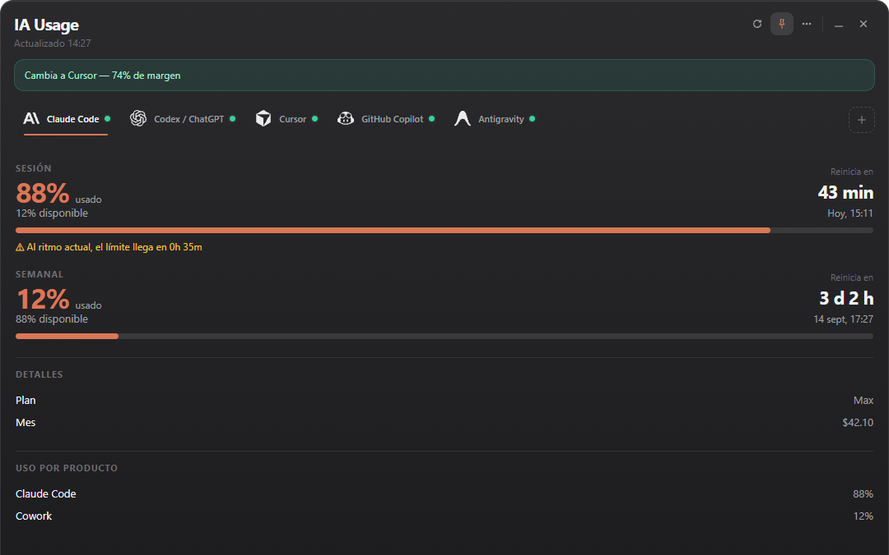
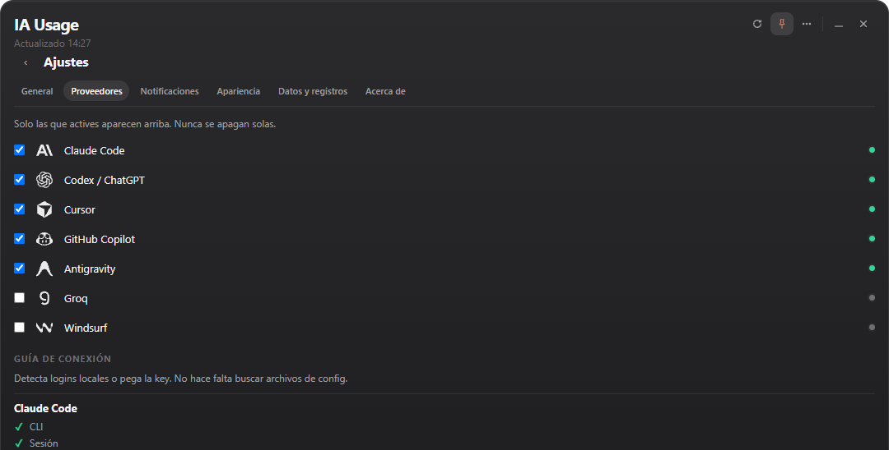

Insights for a smarter tomorrow
Todos tus límites de IA.
Una sola app de Windows.
Monitoriza cuotas de sesión, reinicios semanales, gasto y estado de las herramientas de IA que realmente usas.
Gratis · Open source · Windows 10/11

Same quotas, wherever you work
The Windows tray app is the flagship. The Android companion and VS Code extension mirror the same provider data.
Windows
Tray app with quota panel, compact mode, and spend view. Windows 10/11.
Android
Companion app paired by QR code, with a home-screen widget and background refresh.
VS Code
Status bar and tooltip for VS Code and compatible forks (Cursor, Windsurf, Antigravity).
Una app, todos los proveedores que pagas
Activa solo los que usas. IA Usage nunca desactiva un proveedor por ti.
Sesión, semanal, mensual — todo de un vistazo
Porcentaje usado vs. disponible, cuenta atrás del reinicio, y avisos de ritmo.
Cuota de sesión
Usado/disponible en vivo para la ventana de sesión actual, por proveedor.
Semanal y mensual
Cuotas de ventana móvil y calendario con hora exacta de reinicio.
Manejo de datos obsoletos
Si un proveedor no responde, se mantienen los últimos datos válidos.
Cursor tiene el mayor margen ahora mismo (74%).
Ventana pequeña, misma señal
Se reduce a la cuota principal del proveedor seleccionado y oculta el detalle secundario. Pin la mantiene siempre visible.
Ambos estados persisten entre reinicios y se reflejan en el menú de la bandeja.

Entiende tu uso y coste estimado
Consulta el gasto reportado por el proveedor cuando lo expone, y una estimación local calculada a partir de los logs de uso cuando no — siempre etiquetado, nunca mezclado.
- Reportado por el proveedorcifras directas del propio endpoint de uso del proveedor
- Estimadocoste equivalente calculado localmente a partir de los logs de uso, no una factura

Estado estructurado, no un error genérico
Cada proveedor reporta lo que realmente falla. Umbrales de notificación configurables.
Necesita login
Inicia sesión en la app/CLI del proveedor y usa Detectar o Actualizar.
Necesita permiso
La credencial autentica pero no puede leer el uso — revisa el plan.
Límite de tasa / no disponible
IA Usage no pudo obtener datos frescos ahora. Conserva el último dato válido y muestra la causa cuando puede determinarla.
Tus credenciales se quedan en tu equipo
IA Usage reutiliza sesiones y credenciales que ya existen localmente cuando el proveedor lo permite.
- Las claves API añadidas manualmente se guardan en Windows Credential Manager, nunca en texto plano.
- La app nunca almacena contraseñas.
- El procesamiento es local, salvo las llamadas que cada proveedor activo necesita a su propio endpoint de uso.
- Sin telemetría, sin analítica.
Licencia MIT, inspecciona todo
Sin caja negra. Lee el código, abre un issue o envía un PR.
Deja de adivinar tu cuota.
Una app en la bandeja, todos los proveedores, siempre al día.
Descargar IA Usage para Windows